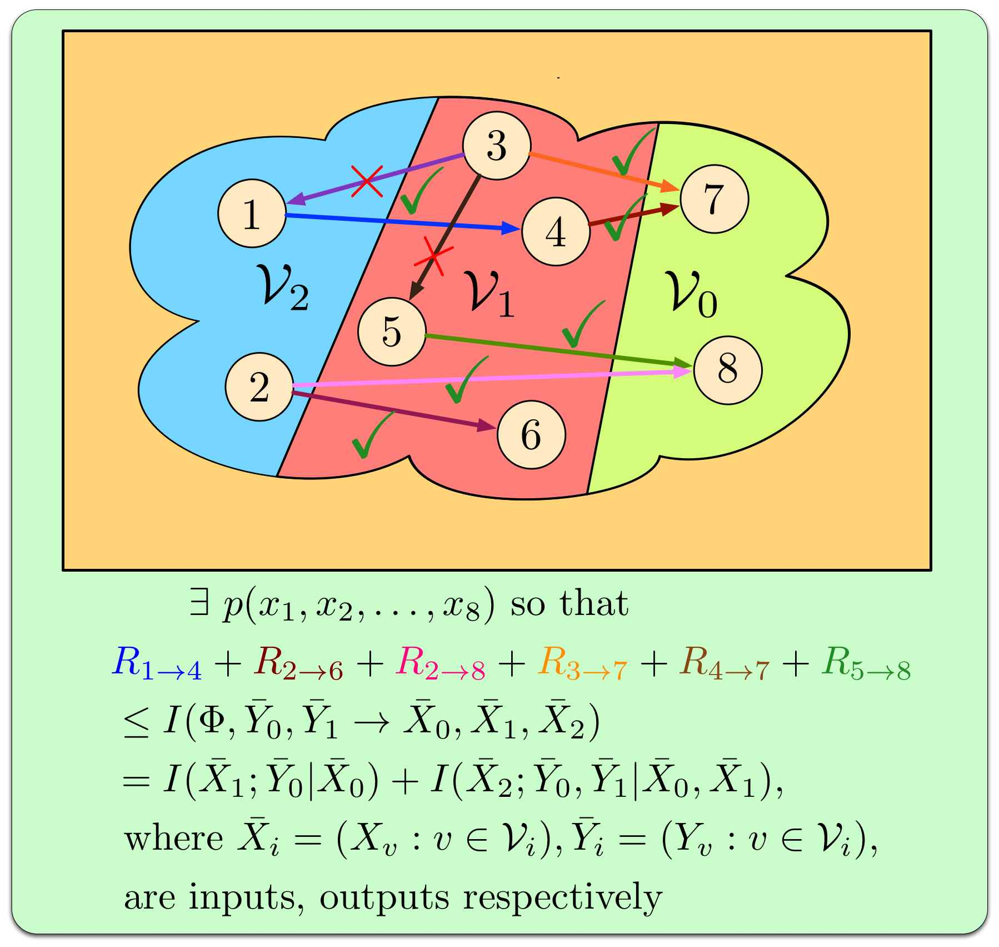

Sudeep Kamath – Research
I am broadly interested in information theory, statistics, and learning. My research as outlined in more detail below, has focused on the interplay between these disciplines. Below are my research themes.
Learning Distributions
Understanding how fast we can learn an unknown probability
distribution from its samples, and the corresponding optimal
estimators is a fundamental problem in learning theory. Surprisingly,
this was understood only for one approximation measure: the
Kullback-Leibler divergence (relative entropy). We studied this
problem under other important notions of loss, specifically  distance, chi-squared divergence, and general f-divergence
approximation measures.
distance, chi-squared divergence, and general f-divergence
approximation measures.
To learn more about this research, please see my talk at the Information Theory, Learning and Big Data workshop hosted at the Simons Institute.
Strong Data Processing Inequalities
An elementary result in information theory asserts that data processing cannot increase the amount of information. In other words, if the random variables U-X-Y form a Markov chain, then the information that the data X provides about U will be no smaller than the information that the processed data Y provides about U. In many cases, this inequality can be strengthened quantitatively to identify how much information is precisely lost. Such so-called strong data processing inequalities have played an important role in recent years in diverse areas such as stochastic simulation, error correcting codes, computation in circuits with noisy gates, and distributed statistical estimation.
Our work has focused on studying connections to hypercontractivity, and on studying mutual information between Boolean functions. A recent application was a simple information-theoretic proof of a beautiful result in probability theory due to Dembo, Kagan, and Shepp (2001) that characterized the maximal correlation of sums of i.i.d. random variables.
Network Information Theory
|  | Network information theory aims to characterize the information capacity of a general multi-flow noisy network. This goal has proven to be considerably difficult, even for small networks. The most general upper bound on the information capacity known was the cutset bound due to El Gamal (1981). We provide a new upper bound on the information capacity that is the first improvement over the classical cutset bound. Our bound has a simple form involving the directed information, a temporal concept that was introduced by Marko and Massey (1990) to study communication under feedback. We thus, provide a spatial interpretation to the directed information. Our bound is represented pictorially on the left. To learn more about this research, please see my talk at the Between Shannon and Hamming: Network Information Theory and Combinatorics workshop hosted at the Banff International Research Station.
|
Commodity Flow, Network Capacity, and Approximation Algorithms
We developed the Generalized Network Sharing bound, a new outer bound for wireline (or graphical) networks, which we proved to be close to tight in several cases of network or traffic symmetry. We showed that the seemingly simple two-unicast problem (the problem of communication in a network with two sources and two destinations, each source communicating a message to its own destination) is as difficult as the general multiple-unicast problem, which was known to be hard. For single-unicast delay-constrained networks, we showed that the advantage of coding was bounded by a factor logarithmic in the delay constraint, by studying a new traffic pattern that we called trianglecast and adapting to it a rounding algorithm in the form of a region-growing lemma.